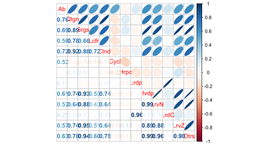
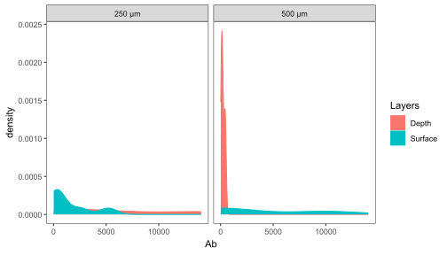
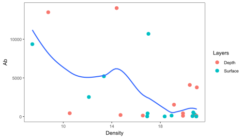
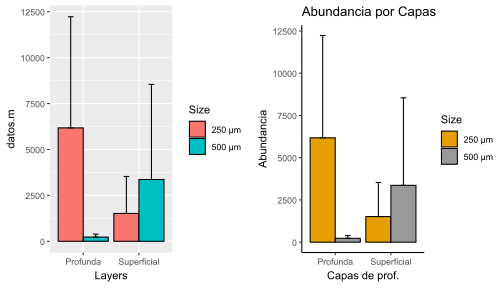

# Librerías requeridas
library(tidyverse)
library(dplyr)
library(kableExtra) # Para la edición de tablas
library(readxl) # Cargar bases de Excel
require(stats) # No se requiere instalar
library(lattice) # No se requiere instalar
library(ggrepel) # insertar rótulos a los puntos
require(SciViews) # Fig. dispersión con coef. de pearson
library(plotrix) # Figuras de cajas con múltiples variables
library(corrplot) # Figuras de elipses
library(psych) # Matrices de correlación para figuras de elipses
library(reshape) # Figuras de cajas con múltiples variables
library(reshape2) # Figuras de cajas con múltiples variables
library(gridExtra) # Para figuras estadísticas (varios factores)
library(grid) # Para figuras estadísticas (varios factores)
library(ggplot2) # Paquete gráfico
library(forcats) # Para manipulación de factores
library(viridis) # Opciones de paletas de coloresResumen
El presente taller tiene por objeto, brindar pautas generales para la visualización de datos biológicos en el lenguaje tidyverse de R. Se realizan algunas operaciones generales usando una base de datos de plancton, que incorpora variables biológicas y ambientales.
Introducción
Se realizarán ejercicios con los comandos generales de tidyverse en el manejo y visualización de datos, utilizando como ejemplo la base de datos de plancton en un estuario de Colombia (biol).
La base de datos “Riqueza” tiene 498 registros y 8 columnas, incluyendo:
- Variables categóricas o factores:
Station(Estación, numérica pero categórica en contexto)Size(Tamaños de malla del plancton)Layers(Capas o estratos en el gradiente de profundidad)Groups(Grupos de plancton)
- Variables cuantitativas:
Abundance(Abundancia de los grupos de plancton)Temperature(Temperatura del agua)Salinity(Salinidad del agua)Density(Densidad de organismos)
Cargar las librerías requeridas
Carga y exploración de datos
La siguiente base presenta una estructura vertical (formato largo), que puede ser apropiada para visualizar patrones generales de abundancia o de las variables ambientales por cada factor o variable categórica (Station, Size, Layers y Groups). Patrones multivariados en los que se requiera visualizar la relación entre cada taxón las variables ambientales, exigen un ajuste de la base de datos a un formato ancho (biol1), en donde cada taxón representa una columna diferente.
# Cargar datos desde Excel
biol <- read_xlsx("plancton.xlsx", sheet = "Riqueza")
# Explorar estructura
# glimpse(biol)
# summary(biol)
# tabla con los datos
head(biol) %>%
kbl() %>%
kable_classic(full_width = F)| Station | Size | Layers | Groups | Abundance | Temperature | Salinity | Density |
|---|---|---|---|---|---|---|---|
| 2 | 250 μm | Surface | Quetognatos | 0 | 30.29749 | 34.69981 | 21.417828 |
| 2 | 250 μm | Surface | Sergestidae | 0 | 29.40959 | 25.83323 | 15.085254 |
| 2 | 250 μm | Surface | Luciferidae | 0 | 29.59008 | 12.38513 | 5.729643 |
| 2 | 250 μm | Surface | Calanoida | 32 | 30.29749 | 34.69981 | 21.417828 |
| 2 | 250 μm | Surface | Cyclopoida | 4 | 29.40959 | 25.83323 | 15.085254 |
| 2 | 250 μm | Surface | Harpacticoida | 2 | 29.59008 | 12.38513 | 5.729643 |
Base de datos en formato ancho
El siguiente procedimiento permitirá organizar la base de datos de tal forma que pueda ser utilizada en diseños multivariados. Normalmente encontrarémos las bases de datos en formato ancho, para esos casos, no será necesario realizar el siguiente procedimiento.
# Procesamiento para ajustar los datos en formato ancho
biol1 <-
biol %>%
# Abreviaturas de los taxones
mutate(Abrev = abbreviate(Groups, minlength = 4)) %>%
# Variables a factores
mutate(across(c(Station, Size, Layers), as.factor)) %>%
# Agrupamiento para el formato ancho
group_by(Station, Size, Layers) %>%
# Promedios de las variables ambientales
summarize(
across(c(Temperature, Salinity, Density), ~round(mean(.),2)),
# Totales de las abundancias por cada factor
Abundance = list(setNames(tapply(Abundance, Abrev,sum,
default = 0), unique(Abrev))),
# Corregir algunos errores del agrupamiento
.groups = "drop") %>%
# Separar las abundancias en las columnas de cada taxon
unnest_wider(Abundance) %>%
# Crear columna Ref, tomando iniciales de tres factores
mutate(
Ref = paste0(substr(Station, 1, 2),
substr(Size, 1, 1),
substr(Layers, 1, 1))) %>%
# Pasar la columna de referencia (consec) a la 1a columna
select(Ref, everything()) %>%
# Crear la columna Ab con la suma de las columnas de taxones
mutate(
# Suma de las columnas especificadas (Ab)
Ab = rowSums(across(Qtgn:Otrs), na.rm = TRUE)
) %>%
# Mover la columna de abundancias (AB)
select(Ref,Station,Size,Layers,Temperature,
Salinity,Density,Ab, everything())
# tabla con los datos
head(biol1) %>%
kbl() %>%
kable_classic(full_width = F)| Ref | Station | Size | Layers | Temperature | Salinity | Density | Ab | Qtgn | Srgs | Lcfr | Clnd | Cycl | Hrpc | Lrdp | Hvdp | LrvN | LrdC | LrvZ | Otrs |
|---|---|---|---|---|---|---|---|---|---|---|---|---|---|---|---|---|---|---|---|
| 22D | 2 | 250 μm | Depth | 29.88 | 25.26 | 14.40 | 14030 | 12672 | 408 | 48 | 135 | 400 | 16 | 68 | 56 | 28 | 3 | 84 | 112 |
| 22S | 2 | 250 μm | Surface | 29.75 | 23.27 | 13.35 | 5210 | 568 | 20 | 2 | 28 | 984 | 0 | 2488 | 0 | 0 | 1096 | 24 | 0 |
| 25D | 2 | 500 μm | Depth | 29.40 | 19.97 | 10.53 | 434 | 50 | 0 | 0 | 0 | 355 | 0 | 0 | 1 | 16 | 0 | 3 | 9 |
| 25S | 2 | 500 μm | Surface | 29.99 | 28.66 | 17.02 | 10697 | 10 | 0 | 0 | 5 | 10672 | 0 | 6 | 0 | 0 | 0 | 2 | 2 |
| 42D | 4 | 250 μm | Depth | 29.38 | 17.34 | 8.76 | 13488 | 10680 | 928 | 32 | 120 | 64 | 0 | 48 | 280 | 400 | 200 | 368 | 368 |
| 42S | 4 | 250 μm | Surface | 29.52 | 21.89 | 12.11 | 2529 | 246 | 17 | 1 | 0 | 2240 | 0 | 16 | 2 | 2 | 4 | 1 | 0 |
1. Figuras de elipses
Las figuras de correlación realizadas con el paquete corrplot, son una buena opción para evaluar los patrones generales de relaciones positivas (azul) y/o negativas (rojo), entre parejas de variables. Funcionan para objetivos orientados en la relaciones de (1) variables biológicas, (2) variables ambientales y (3) variables biológicas con las ambientales.
# Selección de variables biológicas y ambientales
# str(biol1)
# Variables ambientales columnas 6 a 7, biológicas columnas 8 a 20
# Elipses con colores
M <- cor(biol1[,8:20]) # Matriz de Correlación (M)La Figura 1 muestra la relación entre las variables, a partir de figuras de elipses y de circulos.
# Elipses con colores
corrplot(M, method = "ellipse") # Figura de correlaciones con elipses
La Figura 2 muestra la relación entre las variables, a partir de figuras de elipses, además incorpora al nivel de correlación entre las parejas de variables con los coeficientes de Pearson.
# Elipses con colores
corrplot.mixed(M, upper="ellipse")
La siguiente opción de correlación (Figura 3), presenta un código más compejo que las anteriores, pero permite generar una visualización más completa de las relaciones entre parejas de variables y sus coeficientes de correlación de Pearson (también se pueden probar otros coeficientes como Spearman o Kendall).
corrplot(M, method = "circle", # Correlaciones con circulos
type = "lower", insig="blank", # Forma del panel
order = "AOE", diag = FALSE, # Ordenar por nivel de correlación
addCoef.col ="black", # Color de los coeficientes
number.cex = 0.8, # Tamaño del texto
col = COL2("RdYlBu", 200)) # Transparencia de los circulosLa siguiente figura de correlaciones (Figura 4) es apropiada para casos en los que tenemos muchas variables biológicas (ej. tipos de taxones) e interesa evaluar su relación con las variables ambientales.
# Elipses con colores
M1 <- cor(biol1[,5:7], biol1[,8:20]) # Matriz de Correlación (M)
# Elipses con colores
corrplot(M1, method = "ellipse", type="upper")
3. Figuras de Dispersión por pares de variables (pairs)
A continuación se presenta una variante a las figuras de pares (Figura 5), que por medio de la función panel, permite incorporar otros elementos en la matriz gráfica, como histogramas para visualizar el patrón de simetría de cada variable y el valor de correlación con coeficientes como el de Pearson. Las líneas rojas definen la relación no lineal o suavizada (loess o lowess) entre las parejas de variables.
# Correlaciones de Pearson
library(SciViews)
pairs(biol1[,c(5:7)], diag.panel = panel.hist,
upper.panel = panel.cor, lower.panel = panel.smooth)
3. Histogramas
Las dos figuras que siguen (Figura 6 y Figura 7), utilizan comandos del paquete ggplot2 para visualizar de una forma más compacta a la distribución de frecuencias de la variable abundancia de insectos (AB) en las cuatro cuencas evaluadas.
# Frecuencias de abundancias por densidad
ggplot(data = biol1, aes(x = Ab, color = Layers)) +
geom_density(aes(fill = Layers), alpha = 0.5) +
labs( y="Frecuencia", x="Abundancia") +
theme_bw() +
theme(panel.grid = element_blank()
)
# Otra opción
ggplot(data = biol1, aes(x = Ab, color = Layers)) +
geom_density(aes(fill = Layers)) +
facet_wrap(~ Size) +
theme_bw() +
theme(panel.grid = element_blank()
)
4. Dispersión X-Y
Dispersión X-Y con ggplot2
Las tres figuras que siguen, muestran opciones más compactas que la grafica anterior, para visualizar relaciones bivariadas en los descriptores en estudio, permitiendo también analizar el patrón de dispersión de los datos para cada cuenca evaluada (colores). La Figura 8 permite visualizar la relación lineal incluyendo bandas grises que representan los límites de confianza de la proyección realizada.
# Regresiones lineales (Esquema ggplot2)
ggplot(biol1,aes(x = Density, y = Ab)) +
geom_point(aes(color = Layers), size = 3) +
geom_smooth(method= "lm") +
theme_bw() +
theme(panel.grid = element_blank()
)La Figura 9, a diferencia de la anterior, permite visualizar una relación suavizada en la pareja de variables en comparación. Esta relación no lineal es conocida como Loess o Lowess.
# Regresiones suavizadas - Loess o Lowess (Esquema ggplot2)
ggplot(biol1,aes(x = Density, y = Ab)) +
geom_point(aes(color = Layers), size = 3) +
geom_smooth() +
theme_bw() +
theme(panel.grid = element_blank()
)
En la Figura 10 se eliminan los intervalos de confianza (bandas grises) y aumenta el suavizamiento con el comando span = 0.4.
# Regresiones suavizadas (Loess)
ggplot(biol1,aes(x = Density, y = Ab)) +
geom_point(aes(color = Layers), size = 3) +
geom_smooth(se = FALSE, span = 0.5) +
theme_bw() +
theme(panel.grid = element_blank()
)
5. Cajas y Bigotes
Cajas con un factor: Estaciones.
A continuación se visualiza el patrón de variación en la abundancia de los insectos (Figura 11), para las cuatro cuencas evaluadas, adicionando colores especificos, tomados de los enlaces anteriores.
# Convertir variables a factores en caso que se requiera
biol1 <-
biol1 %>%
mutate(across(c(Station, Size, Layers), as.factor))
# Gráfico de caja de la abundancia por estación
ggplot(biol, aes(x = factor(Station), y = Abundance)) +
geom_boxplot(aes(fill = factor(Station))) +
scale_y_continuous(trans = "log10") + # Aplicar la transformación logarítmica
scale_fill_manual(values = c('#fc8d59','#ffffbf','#99d594','#377eb8','#e78ac3','#7570b3')) +
labs(title = "Distribución de la Abundancia por Estación",
x = "Estaciones", fill = "Estaciones",
y = expression(log[10]~(Abundancia~indv.~m^-3))
) +
theme_bw() +
theme(
panel.gridr = element_blank()
)
# geom_boxplot(notch = T,... para las muescas.
Cajas con dos factores: Estaciones y capas.
Las dos figuras a continuación comparan el patrón de abundancia para la base de datos original que está en formato largo (biol) y en formato ancho (biol1). Analizar a que se deben las diferencias.
library(forcats) # Para manipulación de factores
# Cambiar etiquetas de Layers con recode_factor()
biol <-
biol %>%
mutate(Layers = recode_factor(Layers,
"Depth" = "Profunda",
"Surface" = "Superficial"))
# Gráfico de caja de la abundancia por estación
ggplot(biol, aes(x = factor(Station), y = Abundance)) +
geom_boxplot(aes(fill = Layers)) +
scale_y_continuous(trans = "log10") + # Aplicar la transformación logarítmica
labs(title = "Distribución de la Abundancia por Estación",
x = "Estaciones", fill = "Capas",
y = expression(log[10]~(Abundancia~indv.~m^-3))
) +
theme_bw()+
theme(
panel.grid = element_blank()
)
library(forcats) # Para manipulación de factores
# Cambiar etiquetas de Layers con recode_factor()
biol1 <-
biol1 %>%
mutate(Layers = recode_factor(Layers,
"Depth" = "Profunda",
"Surface" = "Superficial"))
# Gráfico de caja de la abundancia por estación
ggplot(biol1, aes(x = factor(Station), y = Ab)) +
geom_boxplot(aes(fill = Layers)) +
scale_y_continuous(trans = "log10") + # Aplicar la transformación logarítmica
labs(title = "Distribución de la Abundancia por Estación",
x = "Estaciones", fill = "Capas",
y = expression(log[10]~(Abundancia~indv.~m^-3))
) +
theme_bw()+
theme(
panel.grid = element_blank()
)
# facet_wrap(~ Layers, scales = "free") # Paneles por variableCajas con diferentes variables: Ambientales
La Figura 12 muestra su versatilidad en que permite incorporar diferentes variables por cada panel presentado. Las cajas de colores representan a los grupos en comparación (cuencas).
# Figuras multivariadas de Cajas y bigotes
ggplot(melt(biol1[,c(2,5:7)]), aes(x=Station, y=value)) + # Usar Station en el eje X
geom_boxplot(aes(fill=Station)) +
scale_y_continuous(trans = "log10") + # Aplicar la transformación logarítmica
scale_color_viridis(discrete = TRUE) +
labs(title = "Distribución de la Abundancia por Estación",
x = "Estaciones", fill = "Estaciones",
y = expression(log[10]~(Abundancia~indv.~m^-3))
) +
facet_wrap(~ variable, scales = "free") + # Paneles por variable
theme_bw() +
theme(
panel.grid = element_blank()
)
6. Coplot
Categorización de dos variables ambientales (Temperatura y Salinidad)
Este método divide la variable en tres partes iguales (terciles) utilizando los cuantiles de la distribución. En el siguiente ejercicio se crean dos variables categóricas llamadas claseTemp y claseSal.
# Categorización de la temperatura
biol <-
biol %>%
mutate(claseTemp = case_when(
Temperature <= quantile(Temperature, 1/3, na.rm = TRUE) ~ "T.Baja",
Temperature <= quantile(Temperature, 2/3, na.rm = TRUE) ~ "T.Media",
Temperature <= quantile(Temperature, 3/3, na.rm = TRUE) ~ "T.Alta"
))
# Categorización de la salinidad
biol <-
biol %>%
mutate(claseSal = case_when(
Salinity <= quantile(Salinity, 1/3, na.rm = TRUE) ~ "S.Baja",
Salinity <= quantile(Salinity, 2/3, na.rm = TRUE) ~ "S.Media",
Salinity <= quantile(Salinity, 3/3, na.rm = TRUE) ~ "S.Alta"
))
# Se puede resumir el nivel alto por el comando "TRUE ~ "Alta"". Cajas con tres factores (estaciones y clases de temperatura y de salinidad)
# Crear gráfico con etiquetas de valores atípicos redondeados
ggplot(biol, aes(x = factor(Station), y = Abundance)) +
geom_boxplot(aes(fill = claseTemp)) +
labs(title = "Abundancia por Estación, salinidad y Temperatura",
x = "Estaciones", fill = "Temperatura",
y = expression(log[10]~(Abundancia~indv.~m^-3))
) +
scale_y_continuous(trans = "log10") + # Aplicar la transformación logarítmica
scale_color_viridis(discrete = TRUE) +
facet_wrap(~ claseSal, nrow = 1, strip.position = "top") +
theme_bw() +
theme(
panel.grid = element_blank()
) 
7. Figuras con estadísticos (promedios, errores, …)
Base de datos con múltiples factores
Lo que diferencia a esta base de datos (insectos1.csv) de la anterior (insectos.csv), es que presenta a diferentes variables agrupadoras o factores, como periodos de lluvia, Gruos Funcionales Alimenticios (GF) y Muestreos. Para el siguiente ejercicio se realizará el resumen estadístico de los dos primeros factores.
# Resumen estadístico "datos_resum"
datos_resum <-
biol1 %>% # Base de datos resumida
group_by(Size,Layers) %>% # Factor o variable agrupadora
summarise(datos.m = mean(Ab), # Media de cada grupo del factor
datos.de = sd(Ab), # Desviacioes estándar de cada grupo
datos.var = var(Ab), # Varianzas de cada grupo
n.Biom = n(), # Tamaño de cada grupo
datos.ee = sd(Ab)/sqrt(n())) # Error estándar de cada grupo
# tabla con los datos
head(datos_resum) %>%
kbl() %>%
kable_classic(full_width = F)| Size | Layers | datos.m | datos.de | datos.var | n.Biom | datos.ee |
|---|---|---|---|---|---|---|
| 250 μm | Profunda | 6175.3333 | 6054.9589 | 36662527.47 | 6 | 2471.92663 |
| 250 μm | Superficial | 1515.0000 | 2015.5865 | 4062588.80 | 6 | 822.85973 |
| 500 μm | Profunda | 228.8333 | 159.4232 | 25415.77 | 6 | 65.08426 |
| 500 μm | Superficial | 3363.6667 | 5180.9455 | 26842196.67 | 6 | 2115.11216 |
Las asignaciones f1 y f2, corresponden a las mismas figuras bifactoriales, en donde la primera se muestra con pocos ajustes de sus ejes y fondo, comparada a la segunda que presenta una mayor edición. Finalmente el comando grid.arrange permite graficar a las dos figuras en un mismo panel.
# Figura 1 (f1)
f1 = ggplot(datos_resum, aes(x=Layers, y=datos.m, fill=Size)) +
geom_bar(stat="identity", color="black",
position=position_dodge()) +
geom_errorbar(aes(ymin=datos.m, ymax=datos.m+datos.de), width=.2,
position=position_dodge(.9))
# f2: Otro formato de figura bifactorial - theme_classic
f2 = f1+labs(title="Abundancia por Capas",
x="Capas de prof.",
y = "Abundancia")+
theme_classic() +
scale_fill_manual(values=c('#E69F00','#999999'))
# Impresión de un panel con las dos figuras de forma horizontal (f1 y f2)
grid.arrange (f1, f2, ncol=2)
Cambiando la ubicación por columnas ncol por la de filas nrow, se cambia la posición de las figuras anteriores en el mismo panel.
# Impresión de un panel con las dos figuras de forma vertical (p1 y p2)
grid.arrange (f1, f2, nrow=2)
CUESTIONARIO
- ¿Cómo se distribuye la abundancia total de organismos en las estaciones de muestreo?
# Gráfico de cajas por estación
ggplot(biol, aes(x = factor(Station), y = Abundance, fill = factor(Station))) +
geom_boxplot() +
labs(title = "Distribución de la Abundancia por Estación",
x = "Estación", y = "Abundancia") +
theme_bw() +
theme(panel.grid = element_blank())- ¿Cómo varía la abundancia entre diferentes tamaños de malla?
# Gráfico de cajas por tamaño de malla
ggplot(biol, aes(x = Size, y = Abundance, fill = Size)) +
geom_boxplot() +
labs(title = "Abundancia por Tamaño de Malla",
x = "Tamaño de Malla", y = "Abundancia") +
theme_bw() +
theme(panel.grid = element_blank())- ¿Cómo se distribuye la abundancia en las capas de muestreo?
# Gráfico de densidad por capa
ggplot(biol, aes(x = Abundance, fill = Layers)) +
geom_density(alpha = 0.5) +
labs(title = "Densidad de Abundancia por Capa",
x = "Abundancia", y = "Densidad") +
theme_bw() +
theme(panel.grid = element_blank())- ¿Cómo se correlacionan las variables ambientales y biológicas?
# Matriz de correlación
M <- cor(biol1[,c(6:8, 9)]) # Variables ambientales y abundancia total
corrplot(M, method = "ellipse")
- ¿Existe una relación entre temperatura y abundancia total?
# Dispersión entre temperatura y abundancia
ggplot(biol1, aes(x = Temperature, y = Ab, color = Size)) +
geom_point(size = 3) +
geom_smooth(method = "lm", se = FALSE) +
labs(title = "Relación entre Temperatura y Abundancia",
x = "Temperatura (°C)", y = "Abundancia") +
theme_bw()
- ¿Cómo varía la salinidad entre las estaciones de muestreo?
# Gráfico de cajas de salinidad por estación
ggplot(biol1, aes(x = factor(Station), y = Salinity, fill = factor(Station))) +
geom_boxplot() +
labs(title = "Variación de Salinidad por Estación",
x = "Estación", y = "Salinidad (PSU)") +
theme_bw()- ¿Cuál es la relación entre la densidad y la temperatura, para las diferentes capas?
# Dispersión entre densidad y temperatura
ggplot(biol1, aes(x = Density, y = Temperature, color = Layers)) +
geom_point(size = 3) +
geom_smooth(method = "loess") +
labs(title = "Relación entre Densidad y Temperatura",
x = "Densidad", y = "Temperatura (°C)") +
theme_bw()- ¿Cuál es la relación entre la salinidad y la temperatura, para los diferentes ojos de malla?
# Dispersión entre salinidad y temperatura
ggplot(biol1, aes(x = Salinity, y = Temperature, color = Size)) +
geom_point(size = 3) +
geom_smooth(method = "lm") +
labs(title = "Relación entre Salinidad y Temperatura",
x = "Salinidad (PSU)", y = "Temperatura (°C)") +
theme_bw()- ¿Cómo varía la abundancia de organismos entre capas?
# Gráfico de cajas de abundancia por capa
ggplot(biol1, aes(x = Layers, y = Ab, fill = Layers)) +
geom_boxplot() +
labs(title = "Variación de la Abundancia por Capa",
x = "Capa", y = "Abundancia") +
theme_bw()- ¿Cómo se distribuye la densidad en las capas?
# Histograma de densidad
ggplot(biol1, aes(x = Density, fill = Layers)) +
geom_histogram(bins = 10, alpha = 0.6, color = "black") +
labs(title = "Distribución de la Densidad",
x = "Densidad", y = "Frecuencia") +
theme_bw()- ¿Cómo se agrupan las estaciones según temperatura y salinidad?
# Gráfico de dispersión con etiquetas
ggplot(biol1, aes(x = Temperature, y = Salinity, color = Station, label = Station)) +
geom_point(size = 3) +
geom_text_repel() +
labs(title = "Agrupación de Estaciones por Temperatura y Salinidad",
x = "Temperatura (°C)", y = "Salinidad (PSU)") +
theme_bw()- ¿Cómo se relaciona la abundancia de organismos en relación con la densidad, para las diferentes capas?
# Relación densidad y abundancia total
ggplot(biol1, aes(x = Density, y = Ab, color = Layers)) +
geom_point(size = 3) +
geom_smooth(method = "lm") +
labs(title = "Relación entre Densidad y Abundancia",
x = "Densidad", y = "Abundancia") +
theme_bw()- ¿Cómo varían las estaciones en función de la salinidad y la temperatura?
# Dispersión de estaciones según salinidad y temperatura
ggplot(biol1, aes(x = Salinity, y = Temperature, color = Station)) +
geom_point(size = 3) +
facet_wrap(~ Station) +
labs(title = "Diferencias en Estaciones por Salinidad y Temperatura",
x = "Salinidad (PSU)", y = "Temperatura (°C)") +
theme_bw()